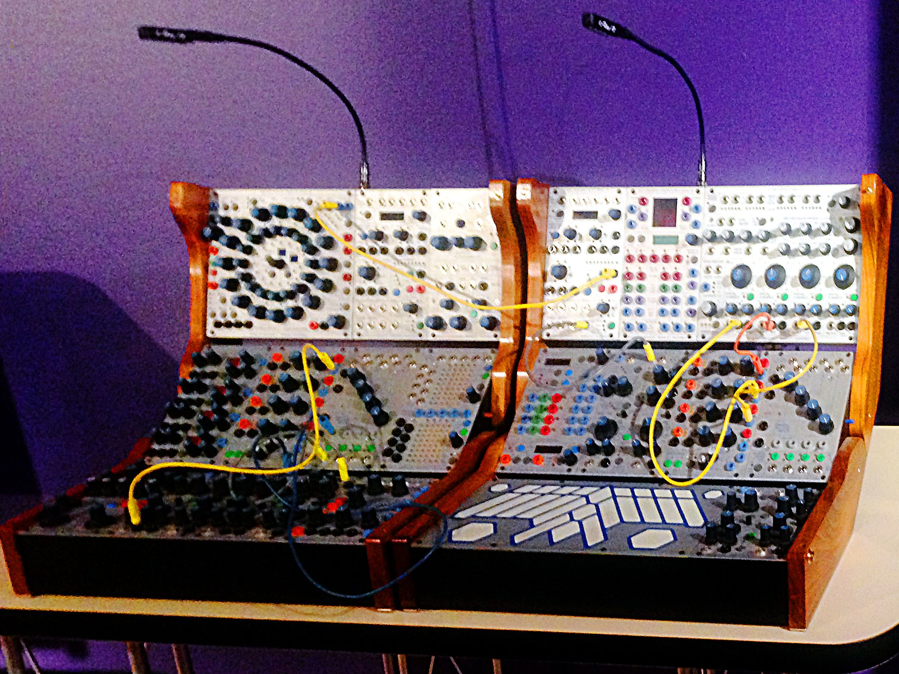

History of the Synthesizer
Some of the earliest examples of electronic musical instruments that can be found include the Telharmonium (1897), the Theremin (1919), the Ondes Martenot (1928), the Trautonium (1928) and the first commercially produced instrument that resembled a modern polyphonic synthesizer, the Hammond Novachord (1938).
In the 1960´s, pioneered by designers such as Robert Moog and Don Buchla, modular synthesizers became popular among studio musicians and experimental composers. These instruments, such as the first Moog modular synthesizer, developed by Bob Moog with composer Herb Deutsch as his consultant, and the Buchla Modular Electronic Music System set the ground for the modern analog synthesizer as we know it today.
In the 1960´s, pioneered by designers such as Robert Moog and Don Buchla, modular synthesizers became popular among studio musicians and experimental composers. These instruments, such as the first Moog modular synthesizer, developed by Bob Moog with composer Herb Deutsch as his consultant, and the Buchla Modular Electronic Music System set the ground for the modern analog synthesizer as we know it today.
